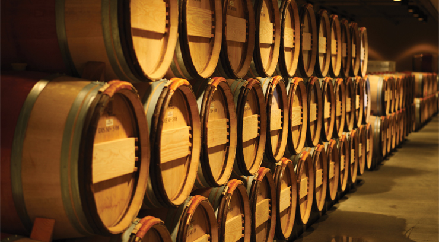

와인의 저장방법
병에 넣은 뒤에도 숙성이 진행될 수 있다는 게 브랜디와 다른 점이다. 코르크가 완전히 밀폐되지는 않기 때문에 극미량의 공기와 접촉하면서 숙성이 가능하다고 한다. 이상적인 보관 조건은 섭씨 12~14도 전후의 항온, 60~70% 정도의 항습, 어둡고, 잡냄새가 없으며 진동이 없는 곳이다. 이런 조건에서 고급 와인은 10~20년에 걸쳐 서서히 숙성하여 젊은 와인이었을 때는 없었던 복합적인 풍미를 띠게 된다. 하지만 코르크가 아니라 스크류 캡 와인에서도 숙성은 여전히 진행되는 점과 병안의 숙성은 코르크의 산소 투과가 문제가 아니라 그냥 병입할 때 처음부터 들어가는 공기로 충분히 발생한다는 연구도 있다. 보관이 중요한건 맞지만 코르크의 밀폐성 따문에 숙성이 가능한 것은 아닐지도 모른다는 말.
단독 주택이라면 어둡고 시원한 지하실, 혹은 마루 밑이나 계단 밑에 보관함을 만드는 게 이상적이며 여기 보관할 때도 신문지 등으로 광선이 안 닿게 싸서 병을 옆으로 뉘어 보관하는 게 좋다. 굳이 옆으로 뉘이는 이유는 코르크 마개의 건조를 막기 위해서이다. 하지만 아파트가 대부분인 한국의 주거 환경에서 위의 '이상적' 보관 조건을 만족시키기란 거의 불가능하다. 엉망으로 보관할 바에는 후딱 마셔버리는 게 술에 대한 예의(?). 와인 붐이 일면서 최근에는 저가형 와인셀러도 많이 나오고 있으니 능력이 되면 이런 장비를 갖추면 좋다. 김치냉장고로 와인을 보관해도 괜찮다. 일반 냉장고보다 좀 더 오래간다고 한다.
와인의 분류방법
-
•스틸 와인 / Still Wine
일반적인 의미의 와인으로 레드 와인, 화이트 와인이 이에 속합니다.
-
•발포성 와인 / Sparkling Wine
1차 발효 후의 와인에 당분과 효모를 첨가하여 병 안에서 2차 발효를 통해
탄산가스를 용해시킨 와인으로 샴페인, 스푸만테 등이 이에 속합니다. -
•주정강화 와인 / Fortified Wine
알콜도수를 높이기 위해 발포 중 또는 발포가 끝난 후 브랜디를 첨가한 와인
으로 포트와인, 셰리와인, 마샬라와인 등이 이에 속합니다. -
•착향 와인 / Flavored Wine
와인의 발포 전후에 과실즙이나 천연향을 첨가하여 와인의 향을 좋게 한
와인을 말합니다.